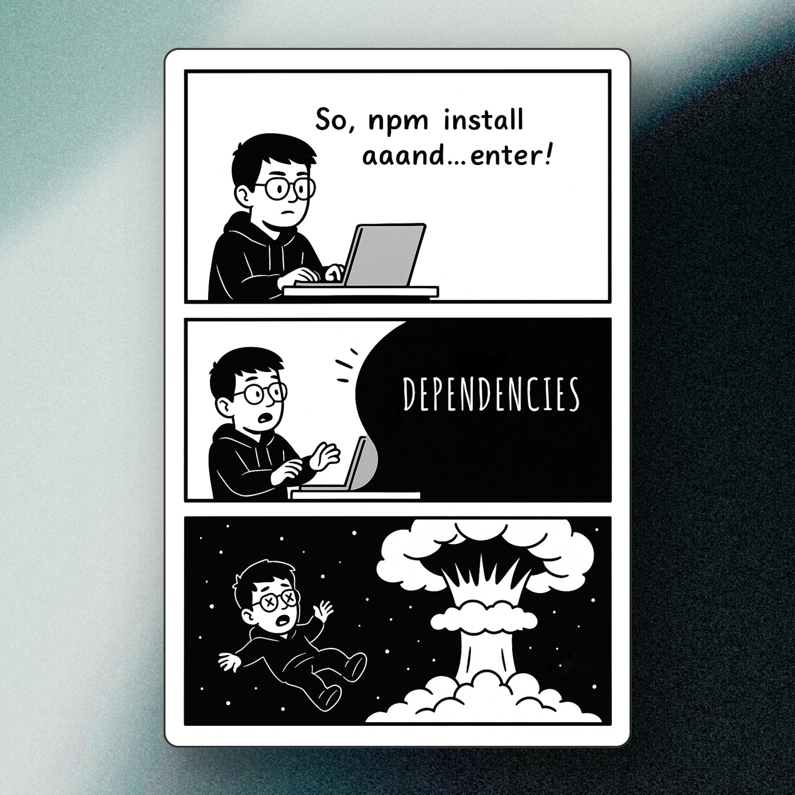

thinking
thinking

There is a version of me that would have spent three weeks building the heavy infrastructure for this blog before writing a single word. I am talking a custom CMS, a perfectly tuned markdown pipeline, and automated CI/CD workflows. All of that for a site where I might publish something twice a month if I am lucky.
I know that guy well. Honestly, I used to be him.
The Slippery Slope
It always starts with a perfectly reasonable idea, like wanting to write down a few things I have been learning. But then the developer brain takes over. Suddenly, I decide I need a custom markdown parser. Then I need a bulletproof build pipeline. Then I think, "Well, I might as well make it extensible so I can add a complex tagging system later."
Six hours pass, and I haven't actually written a single sentence.
The technical implementation quickly becomes the project, and the actual goal — which was just to share something useful — gets buried under layers of architectural overthinking.
I have abandoned at least half a dozen ideas this exact way. It was all scaffolding and no actual building.
The Shift
Eventually, I got tired of my own habits and started asking one clear question before opening a new repository: what is the absolute smallest version of this that works right now?
Not what would look cool to build, and definitely not what could theoretically scale to millions of users. Just — what solves the problem today?
That is why this blog is literally just a flat HTML file. There is no hidden CMS, no database, and no complex build pipeline. If I eventually outgrow it, I will deal with that problem when it actually becomes real, not while it is still entirely hypothetical.
The Real Tax
Over-engineering does not just eat up your time — it completely drains your motivation. Every unnecessary layer of infrastructure you build is just another obstacle you have to clear before you can do the thing you actually wanted to do in the first place. After a while, you get tired of clearing obstacles and just stop opening the editor.
The ultimate irony of software development is that the beautifully engineered, infinitely scalable project almost never actually launches. The simple, slightly unpolished version does. And a project that actually exists in the real world is worth infinitely more than an elegant masterpiece that only lives in a local folder on your laptop.
So, just ship the simple file. You can add the database when you hit 10,000 users. Trust me, neither of us is there just yet.